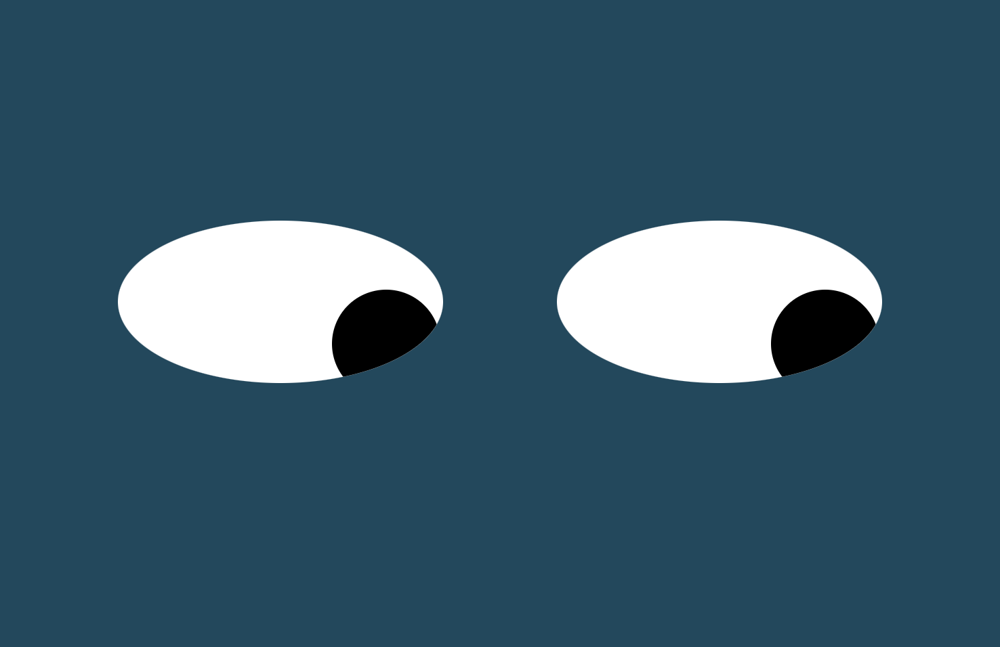
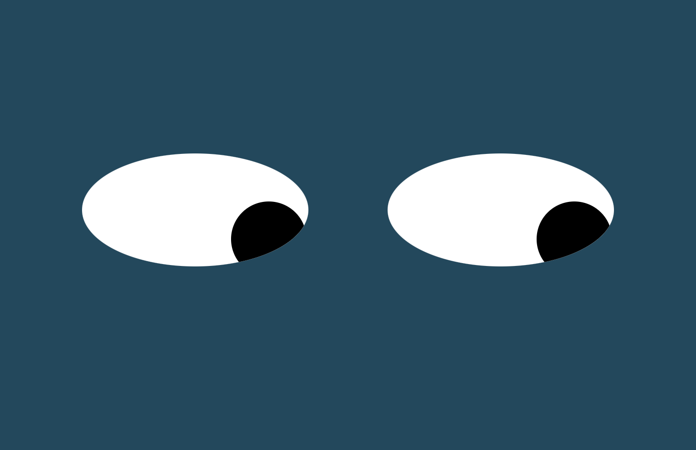

PACMEN GENERATOR
The PacMen project was assigned and developed to further teach and practice the fundamentals of manipulating styles, using array methods, and manipulating the DOM. By clicking the "Start Game" button and then the "Add PacMan," users are able to generate multiple pacmen that bounce around the screen, changing direction once hitting the sides.
 github repo

github repo

WATCHFUL EYES
The eyes project was assigned and developed to further teach the fundamentals of manipulating styles. Using the skills learned thus far in my journey to become a full stack developer, this project shows what happens when you bring together JavaScript and CSS to create a dynamic experience. The eyes generated on your screen are programmed to follow user mouse movement around the screen.
github repo